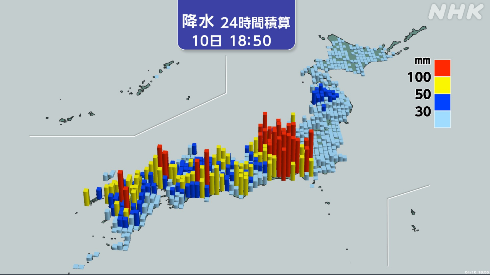
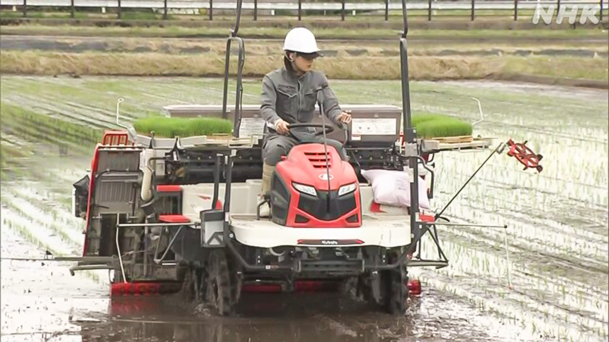
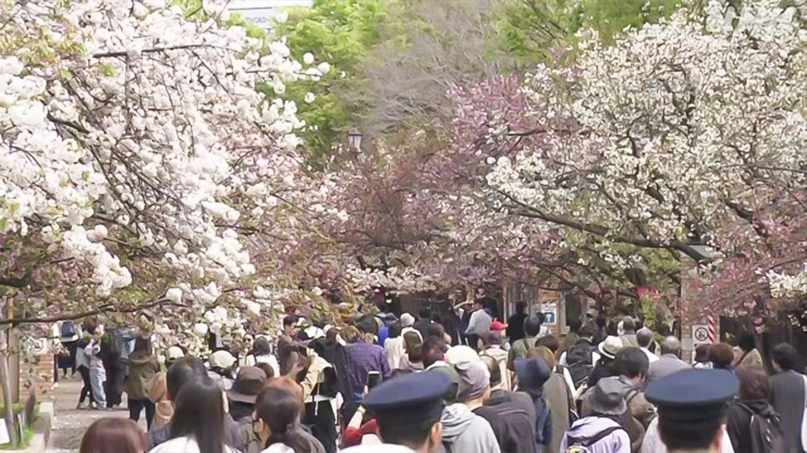

最新ニュース
1️⃣ 強い雨や風に気をつけて 11日は暑くなりそう

関東地方から九州までのいろいろな所で、雨や風が強くなっています。
10日の午後、石川県輪島市や千葉市でとても強い風が吹きました。10日は夜遅くまで強い雨や風が続く所がありそうです。
気象庁によると11日は、北海道や東北地方でとても強い風が吹く心配があります。
そして、多くの所で晴れて気温が上がりそうです。埼玉県熊谷市で29℃、東京や横浜市で26℃ぐらいまで上がりそうです。まだ体が暑さに慣れていないため、熱中症に気をつけてください。
2️⃣ 原油の値段が高くなって米の農家も困っている

アメリカなどとイランの戦いが始まってから、原油の値段がとても高くなっています。原油の値段がどうなるか、多くの人が心配しています。
米を作っている農家の人たちも困っています。
富山県高岡市の団体は、9日から機械を使って田植えを始めています。団体によると、機械に入れる油の値段が去年より20％ぐらい高くなっています。
団体の社長は「今年は、いつもの年より100万円以上お金がかかりそうです」と話していました。
3️⃣ ガザでの戦いを止める約束をしてから730人以上が亡くなった
パレスチナのガザ地区のニュースです。
去年10月、イスラエルとハマスは、ガザ地区での戦いを止める約束をしました。10日で6か月になりました。
国連によると、ガザ地区では、今も多くの人がテントで生活しています。食べ物や生活に必要な物を十分に運ぶこともできません。
そして、6か月の間に、イスラエルの攻撃で730人以上が亡くなっています。
家族が亡くなった女性は、世界の人たちはイランやホルムズ海峡のことばかり考えて、ガザのことを忘れていると話していました。
4️⃣ 大阪 造幣局で140種類の桜を楽しむことができる

大阪市にある造幣局で、いろいろな種類の桜を楽しむことができる「桜の通り抜け」が始まりました。
560ｍの道に331本の桜の木が並んでいます。歩きながら花見ができます。桜の種類は140もあって、花の色が黄緑の珍しい桜もあります。
神戸市から来た小学生は「いろいろな桜があって、楽しい気分になります」と話していました。
「桜の通り抜け」は、今月15日までです。インターネットで予約が必要です。
- 〜ところ
- 〜から
- 〜ている / 〜でいる
- 〜から〜まで
- 〜まで
- 〜ても / 〜でも
- 〜がある / 〜がいる
- 〜そうだ
- 〜によると
- 〜くらい / 〜ぐらい
- 〜ため
- 〜てください / 〜でください
- 〜てから
- 〜など
- 〜より
- 〜以上
- 〜になる
- 〜こと
- 〜ばかり
- 〜ことができる
- 〜ながら
vebaev.github.io
Generated: 2026-04-10 11:54:58 UTC